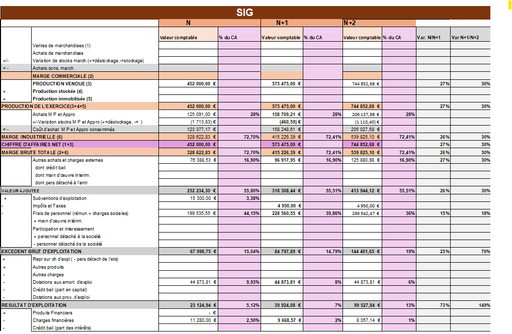
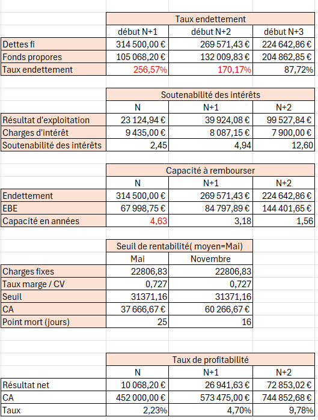
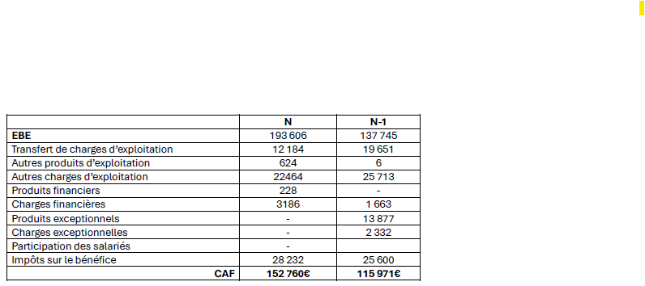
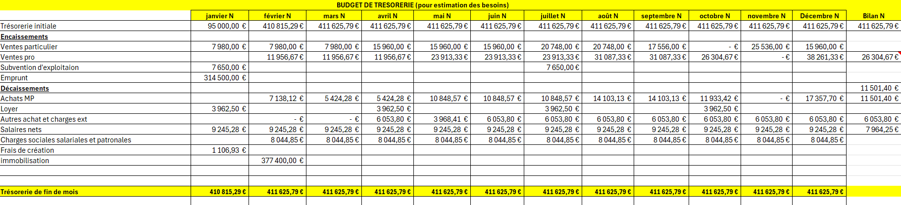
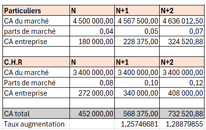
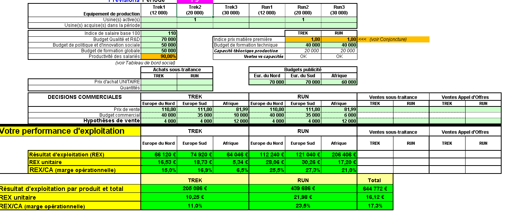
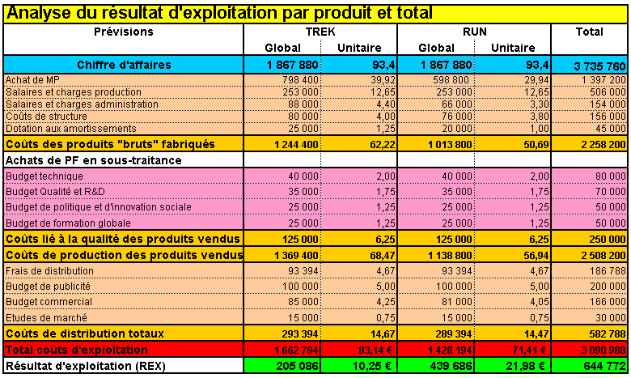
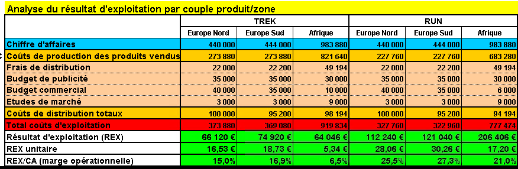

5
Compétence CE5
Évaluer l'activité de l'organisation
Évolution
Ma progression BUT 2 → BUT 3
CE5.01
Identifier les points forts et les points faibles de l'organisation aussi bien en termes d'activité que de structure financière
✓ Acquis
J'ai mené des analyses financières complètes en m'appuyant sur les soldes intermédiaires de gestion, les ratios de structure et de rentabilité, et les bilans fonctionnels. En alternance chez Tecmaplast comme dans mes SAE, j'ai su repérer les forces et les vulnérabilités d'une organisation pour en faire une synthèse argumentée.
→
Analyser les soldes intermédiaires de gestion
→
Identifier les points forts/faibles de la structure financière
Preuves & justification

Soldes intermédiaires de gestion · SAE La Doua, reprise d'une boulangerie

Ratios financiers (endettement, rentabilité) · SAE La Doua

Capacité d'autofinancement (CAF) · SAE Banque de France
CE5.02
Mesurer la rentabilité d'un investissement
⏳ En cours
J'ai abordé les outils de mesure de la rentabilité d'un investissement — VAN, TRI, délai de récupération — notamment en cours de finance. C'est une compétence que j'ai commencé à appliquer sur des cas pratiques mais que je continue à développer pour l'intégrer pleinement dans mes analyses.
→
Calculer des ratios
→
Comparer plusieurs scénarios d'investissement
CE5.03
Réaliser des prévisions au niveau de l'activité, de la trésorerie et du patrimoine dans une optique de financement de l'organisation
⏳ En cours
J'ai travaillé sur des exercices de prévision d'activité et de trésorerie dans le cadre de mes cours, en construisant des budgets prévisionnels et des plans de financement. Cette compétence est encore en développement, notamment pour ce qui concerne la dimension patrimoine.
→
Établir un budget de trésorerie
→
Faire des prévisions d'activité
Preuves & justification

Budget de trésorerie · SAE La Doua, reprise d'une boulangerie

Prévision d'augmentation du CA · SAE La Doua
CE5.04
Mettre en place une comptabilité analytique et une gestion budgétaire
⏳ En cours
J'ai découvert les fondements de la comptabilité analytique et de la gestion budgétaire en cours de contrôle de gestion — centres de coûts, méthodes d'imputation, suivi des écarts. Je continue à approfondir cette compétence, notamment à travers mes missions en alternance chez Tecmaplast.
→
Mettre en place un suivi budgétaire
→
Calculer les coûts de revient par centre d'analyse ou par produit
Preuves & justification

Mise en place du suivi budgétaire · SAE IPAJE / Choose

Analyse du résultat d'exploitation par produit · SAE IPAJE / Choose

Analyse du résultat d'exploitation par couple produit/zone · SAE IPAJE / Choose
«
Cette compétence me projette vers l'avenir : évaluer une organisation, c'est comprendre d'où elle vient pour mieux anticiper où elle va.
CE5 · Matières mobilisées
Finance
Diagnostic financier
Contrôle de gestion
Résultat et performance
BFR
Droit des affaires
Droit pénal
Analyse financière
Ratios financiers
SIG
Bilan fonctionnel
Rentabilité
Trésorerie
Budget prévisionnel
VAN · TRI
Comptabilité analytique
Gestion budgétaire
Écarts budgétaires
Plan de financement
Finance & performance
Gestion & droit
Outils & méthodes